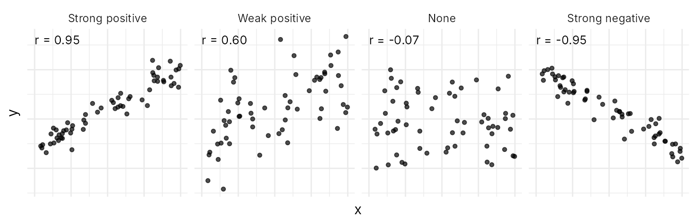
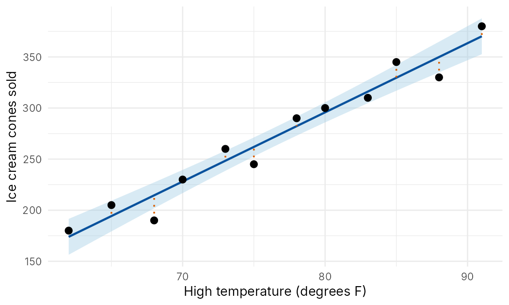
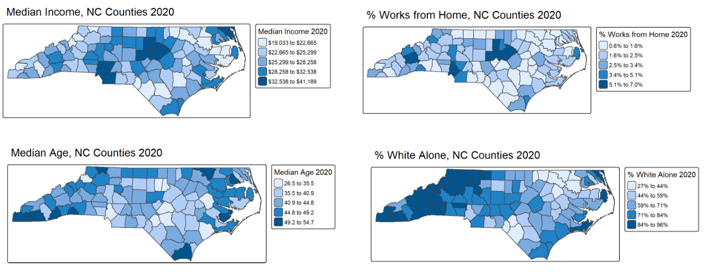
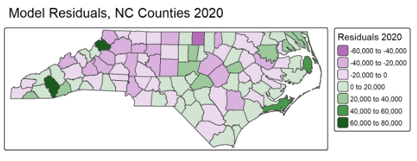

19 Linear Regression
By the end of this chapter you should be able to:
- Describe how data become information and then knowledge, and why spatial data need their own methods.
- Tell a dependent variable from an independent variable, and correlation from regression.
- Write a regression formula and fit a linear regression in R with
lm(). - Read a model summary: coefficients, p-values, R², and adjusted R².
- Build a multivariate model and compare it with a simpler one.
- Map a model’s residuals and explain what clusters of similar residuals mean.
Chapter 18 asked whether groups of places differ. This chapter asks a different question: how does one variable change as another changes? Do counties where more people work from home have higher house values? By how much? And how well does that explain the differences between counties?
The tool is regression. We’ll start with where regression fits in turning data into knowledge, build it up on a small example you can run, and then follow a North Carolina project on median house values from research question to residual map.
19.1 From data to knowledge
Data science is using data to gain information or knowledge about the world. Data become knowledge in steps, each adding context:
| Step | What it is | North Carolina example |
|---|---|---|
| Data | Raw values without context | Median house value and the share of people working from home in each county |
| Information | Data organized and summarized | A map showing which counties have the highest house values |
| Knowledge | Information explained and tested | A regression showing that counties with more remote workers have higher house values |
Regression is one of the main ways we take that last step: from a pattern on a map to a tested explanation.
19.1.1 Spatial data are special
Spatial data need their own methods, for four reasons:
- Location is a core attribute, and location is messy: projections, geocoding errors, and boundaries that change.
- Nearby things are more alike. This spatial autocorrelation breaks the independence assumption behind standard statistics, including the regression in this chapter.
- Spatial data are visual, so they call for maps and other visualizations.
- Spatial data often change over time, which adds a temporal side to the analysis.
Spatial data science draws on many fields to deal with these: environmental and sociodemographic data with location and time attached; remote sensing, geostatistics, spatial databases, and geographic information science; cloud platforms and APIs; and programming in R, Python, and SQL.
19.2 Regression explains how one variable changes with others
Regression analysis fits a model that estimates one variable from one or more others.
- The dependent variable, y, is the outcome you want to explain: here, median house value.
- The independent variables, x, are the variables you think explain it: the percent working from home, median income, median age.
A regression estimates three things about each independent variable:
- Direction: does y rise or fall as x rises?
- Strength: how much of the variation in y does x explain?
- Size: how much does y change for each one-unit change in x?
19.2.1 Correlation and regression
Correlation shows whether two variables move together. The correlation coefficient, r, runs from −1 (a perfect negative straight-line relationship) through 0 (none) to 1 (a perfect positive one) (Figure 19.1).

Regression goes further. It estimates how much y changes for each unit of x, and it draws the line of best fit: the straight line that comes closest to the points, in the sense that the squared vertical distances from the points to the line add up to as little as possible. That’s why it is called ordinary least squares.
The line has the familiar form
\[ y = b_0 + b_1 x \]
where b₀ is the intercept (the value of y when x is 0) and b₁ is the slope: how much y changes when x goes up by one. The intercept and slope are the model’s coefficients.
19.3 Writing a regression formula
In R, a regression formula puts the dependent variable on the left of the tilde, ~, and the independent variables on the right, joined by +:
dependent ~ independent1 + independent2 + ... + independentNFor example:
ice_cream_sales ~ temperature
weight ~ height + sex + cheeseburgers_per_day + steps_per_day + phone_numberThe second formula makes a point: every variable needs a reason to be there. Height, sex, diet, and exercise all plausibly affect weight. A phone number has no plausible link at all, even if, by chance, it happened to correlate with weight in your data. Choose variables from what you know about the process, not by trying everything.
lm(), for linear model, fits the regression:
lm(median.house.value ~ works.from.home.percent, data = ncCounties)19.3.1 A small example to try
An ice cream stand records its high temperature and the number of cones sold on 12 days:
The correlation is 0.98: temperature and sales move together very closely. The regression says
\[ \text{cones} = -245.7 + 6.77 \times \text{temperature} \]
so each extra degree goes with about 6.8 more cones sold. The intercept, −245.7, is the predicted sales at 0 °F. It’s needed to place the line, but it means nothing on its own: no one buys ice cream at 0 °F, and the stand never opened on a day that cold.
Use the model to predict with predict():
At 77 °F the model predicts about 275 cones. At 100 °F it predicts 431, but be careful: that is extrapolation, a prediction outside the range of the data (62 to 91 °F). The straight line may not hold there.
19.4 Anatomy of a regression
Figure 19.2 shows the parts of a fitted regression:

- The line of best fit is the best estimate of y for any value of x.
- R² (R-squared) is the share of the variance in y that the model explains, from 0 to 1. Here R² = 0.96: temperature explains 96% of the day-to-day variation in sales. As a rough guide, below about 0.3 the two variables are barely connected.
- The 95% confidence band shows how uncertain the line itself is. It’s narrowest near the middle of the data and widens toward the ends.
- Residuals are the vertical distances from each point to the line: observed minus predicted. Points far from the line are outliers worth understanding, not deleting. On the 68 °F day, the stand sold about 25 fewer cones than predicted. Was it raining?
19.5 Reading the model summary
summary() reports the statistical results:
Work down the output:
- Call: the model you fitted.
- Residuals: a five-number summary of the residuals. Roughly symmetric around 0 is good.
- Coefficients: one row per coefficient.
- Estimate: the intercept, and the slope for each independent variable. Here 6.77 cones per degree.
- Std. Error: how uncertain each estimate is.
- t value: the estimate divided by its standard error.
- Pr(>|t|): the p-value for the null hypothesis that the true coefficient is 0, that is, that x has no relationship with y. Stars flag small p-values:
***means p < 0.001. For temperature, p = 4.5 × 10⁻⁸ (R writes4.51e-08), so the relationship is very unlikely to be chance.
- Residual standard error: the typical size of a residual, about 14 cones.
- Multiple R-squared and Adjusted R-squared: the share of variation explained. Adjusted R² lowers R² a little for each independent variable in the model, so that adding useless variables can’t make a model look better. Use it to compare models with different numbers of variables.
- F-statistic: a test of whether the model as a whole explains anything, with its p-value.
19.6 Example: house values in North Carolina
Now a real project, written up as an R Markdown report. Its research question: what demographic variables may influence median house value in North Carolina counties in 2020? In particular, is the share of people working from home related to house values, and by how much?
The data are Census Bureau estimates for North Carolina’s 100 counties for 2020, loaded as an sf object called ncCounties. (Names ending in E, such as median.house.valueE, are estimates from the American Community Survey, as tidycensus names them.) Before modeling, map each independent variable (Figure 19.3):

Higher incomes and more remote work stand out around the Triangle and Charlotte. Older populations are in the mountains and along parts of the coast.
Why might counties where more people work from home have higher house values? Think of at least two explanations. Does working from home push prices up, or do the jobs that allow remote work simply pay more?
19.6.1 The first model
first.model <- lm(median.house.valueE ~ works.from.home.percent, data = ncCounties)
summary(first.model)Call:
lm(formula = median.house.valueE ~ works.from.home.percent, data = ncCounties)
Residuals:
Min 1Q Median 3Q Max
-60097 -19670 -5395 13763 102485
Coefficients:
Estimate Std. Error t value Pr(>|t|)
(Intercept) 73974 5839 12.67 <2e-16 ***
works.from.home.percent 36564 2185 16.73 <2e-16 ***
---
Signif. codes: 0 '***' 0.001 '**' 0.01 '*' 0.05 '.' 0.1 ' ' 1
Residual standard error: 29220 on 98 degrees of freedom
Multiple R-squared: 0.7408, Adjusted R-squared: 0.7381
F-statistic: 280 on 1 and 98 DF, p-value: < 2.2e-16Read the three key numbers:
- The coefficient. Each additional percentage point of people working from home goes with a median house value about $36,564 higher.
- The p-value. Below 2 × 10⁻¹⁶, effectively zero. Three stars: p < 0.001.
- Adjusted R². 0.7381: the share working from home alone accounts for about 74% of the variation in median house value between counties.
19.6.2 Adding variables: a multivariate model
A model with more than one independent variable is a multivariate (or multiple) regression. The second model adds median age, median income, and the percent white:
second.model <- lm(median.house.valueE ~ works.from.home.percent +
median.ageE + median.incomeE + white.percent,
data = ncCounties)
summary(second.model)Coefficients:
Estimate Std. Error t value Pr(>|t|)
(Intercept) -7.949e+04 2.596e+04 -3.062 0.00286 **
works.from.home.percent 2.434e+04 2.324e+03 10.476 < 2e-16 ***
median.ageE 1.839e+02 4.794e+02 0.384 0.70218
median.incomeE 4.313e+00 7.233e-01 5.964 4.19e-08 ***
white.percent 8.154e+02 1.432e+02 5.695 1.37e-07 ***
---
Residual standard error: 21620 on 95 degrees of freedom
Multiple R-squared: 0.8624, Adjusted R-squared: 0.8567
F-statistic: 148.9 on 4 and 95 DF, p-value: < 2.2e-16R writes large and small numbers in scientific notation: 2.434e+04 means 2.434 × 10⁴, or 24,340. What changed?
- Adjusted R² rose from 0.74 to 0.86. Together the four variables explain about 86% of the variation.
- Median age is not significant (p = 0.70). Once the other variables are in the model, age adds little.
- The other three are significant. Holding the others constant, each extra dollar of median income goes with $4.31 more house value (so $4,313 per $1,000 of income), and each extra percentage point white goes with about $815.
- The work-from-home coefficient shrank, from $36,564 to about $24,340. Part of what the first model credited to remote work really went with income: counties where more people work from home also tend to have higher incomes. A coefficient in a multivariate model is the change in y for one unit of x with the other variables held constant.
Even a strong, significant coefficient doesn’t show that x causes y. Here it isn’t clear which way the relationship runs: working from home could drive up house prices, or people whose jobs allow remote work may earn more and so buy more expensive houses. A good write-up says so.
19.7 Mapping residuals
A regression isn’t finished until you check its residuals, and with spatial data that means mapping them. A residual is a county’s observed house value minus the model’s prediction. Residuals near 0 mean the model fits that county well; large positive or negative residuals mean a poor fit.
ncCounties$resids <- second.model$residuals
tm_shape(ncCounties) +
tm_polygons(fill = "resids",
fill.scale = tm_scale_intervals(midpoint = 0),
fill.legend = tm_legend("Residuals 2020",
position = tm_pos_out("right"))) +
tm_title("Model Residuals, NC Counties 2020")
Look for clusters. If counties with large positive residuals sit next to each other, the model is missing something spatial: here, perhaps second homes and vacation markets in the mountains and on the beach, which raise house values beyond what local incomes predict. Clustered residuals also mean the observations aren’t independent, so the model’s standard errors and p-values are too small.
The fix is a cycle:
- Fit the model.
- Map the residuals.
- Test them with Moran’s I (Chapter 22), which measures whether the residuals cluster more than chance would produce.
- Revise the model: add the missing variables, or move to a spatial regression model, such as a spatial lag model or a spatial error model, that builds neighbors into the model.
Repeat steps 2 to 4 until the residuals no longer cluster.
19.8 Check your understanding
In
lm(house_value ~ income, data = d), the dependent variable is:Correlation tells you how much y changes for each unit of x.
A slope of 36,564 for
works.from.home.percentmeans each extra percentage point working from home goes with a median house value that is:An adjusted R² of 0.74 means the model explains about what percent of the variation in y?
Which number should you use to compare models with different numbers of independent variables?
In the second model, median age has p = 0.70. This means:
A residual is:
Clusters of similar residuals on a map suggest the model is missing something spatial.
19.9 Summary
- Data become information when organized and knowledge when explained and tested. Regression is a main tool for the last step.
- Spatial data need their own methods: location is messy, nearby things are alike (spatial autocorrelation), and the data are visual and change over time.
- Regression models a dependent variable (y) from one or more independent variables (x). Correlation says whether two variables move together; regression says by how much, and draws the line of best fit.
- In R:
lm(y ~ x1 + x2, data = d), thensummary(). Read each coefficient, its p-value, and the adjusted R². Every variable needs a reason to be in the model. - In North Carolina in 2020, each percentage point working from home went with about $36,564 higher median house value (adjusted R² = 0.74). Adding income and percent white raised adjusted R² to 0.86 and shrank that coefficient to about $24,340.
- Regression shows association, not causation.
- Map the residuals. Clusters of similar residuals mean the model misses something spatial; test them with Moran’s I, then revise the model.
19.10 Exercises
- Ice cream by hand. Using the ice cream model, predict sales at 70 °F and at 85 °F from the equation, then check with
predict(). Which of the 12 days has the largest positive residual? - Fahrenheit to Celsius. Convert
tempto degrees Celsius and refit the model. What happens to the slope, the intercept, and R²? Why? - Your own variables. Download median house value (
B25077_001), median household income (B19013_001), and one variable of your choice for North Carolina’s counties with tidycensus (Chapter 13). Fit a model with income, then with both variables. Did adjusted R² go up? - Map the residuals. Map the residuals from your model in Exercise 3. Where does the model over-predict and under-predict? Do the residuals look clustered?
- Births. With the sf package’s
ncdata, regressBIR79onBIR74. Interpret the slope and R². Why is this a less interesting model than it looks?
19.11 Further reading
- OpenIntro Statistics (4th ed.), by David Diez, Mine Çetinkaya-Rundel, and Christopher Barr, free at https://www.openintro.org/book/os/. Chapters 8 and 9 cover linear and multiple regression.
- Geocomputation with R (2nd ed.), by Robin Lovelace, Jakub Nowosad, and Jannes Muenchow, free at https://r.geocompx.org. Its chapter on statistical learning applies models to spatial data.
- Spatial Regression Models (2nd ed.), by Michael D. Ward and Kristian Skrede Gleditsch (SAGE, 2018), introduces the spatial lag and spatial error models.
~ in an R formula.
A variable used to explain the dependent variable, x. It goes
on the right of the ~.
Whether two variables move together. It doesn’t say how much one changes
with the other, or which causes which.
A statistical model of how one variable (such as home price) changes
with one or more others (such as distance to downtown).
A number a regression estimates: the intercept, or the slope for each
independent variable.
The probability of a result at least as extreme as yours if the null
hypothesis were true. It is not the chance the null hypothesis is true.
The share of the variation in y that a model explains, from 0
to 1.
R-squared lowered a little for each independent variable, so adding
useless variables can’t make a model look better. Use it to compare
models.
A regression with more than one independent variable. Each coefficient
is the change in y with the others held constant.
An observation’s actual value minus the value a model predicts for it.
Map them to see where a model fits poorly.
In R, a named piece of memory that holds data, such as
months <- 12. In a dataset, a measured characteristic,
such as median income; each Census variable has a code.
The middle value when values are sorted, so half are above and half
below. Unlike counts, medians can’t be added across areas.
The specific, answerable question a project sets out to answer, usually
with a place and a time.
A method for flattening the curved graticule onto a flat map. Every
projection distorts shape, area, distance, or direction.
Turning an address or place name into coordinates that can be mapped.
The tendency for things that are close together to be more alike than
things that are far apart, such as neighboring counties having similar
incomes.
The assumption, built into most standard statistics, that knowing one
observation tells you nothing about another. Data about places usually
break it, because nearby places tend to be alike.
The use of data that have a location attached to answer questions about
the world. It combines what we study (the spatial), how we
handle it (data skills), and how we ask and answer questions
(science).
Collecting information about Earth without touching it, from sensors on
satellites, aircraft, or drones. It produces most of the world’s raster
data.
Application Programming Interface: a set of rules for how one program
asks another for data or services, such as your R script asking the
Census Bureau’s server for a table.
Structured Query Language, the language of databases. ArcGIS
where clauses use it: fcounty = 'Orange'.
r, from −1 to 1: how closely two variables follow a straight
line, and in which direction. cor() in R.
The straight line that comes closest to the points in a scatterplot: a
regression’s estimate of y for each x.
The usual way to fit a regression line: choose the line that makes the
sum of squared residuals as small as possible.
The predicted value of y when every x is 0: where the
regression line crosses the y axis.
How much y changes when x goes up by one unit: the
coefficient of an independent variable.
Combining two tables by matching rows on a shared key column, such as
attaching Census data to boundaries by GEOID with
left_join().
A model in which y is a straight-line function of the
x variables. lm() in R.
Using a model to predict outside the range of the data it was fitted to.
The relationship may not hold there.
A range that is likely to contain the true value of something estimated
from data. geom_smooth() shades a 95% confidence interval
around its trend line.
A measure of spread: the standard deviation squared, so its units are
squared too. var() in R.
A value far from all the others. It may be real or an error, so check it
before you report it.
A measure of how much a sample estimate would vary from sample to
sample. For the ACS, it is the margin of error divided by 1.645.
The claim a test starts from: that there is no difference or no
relationship. A small p-value is evidence against it.
ANOVA’s test statistic: the variance between groups divided by the
variance within groups. Near 1 if the groups don’t differ.
A document format (.Rmd) that mixes formatted text with
chunks of R code. Knitting it runs the code and builds a finished
report.
“Simple features”: the R package for spatial vector data. An sf object
is a data frame with a geometry column holding each row’s point, line,
or polygon.
The Census Bureau’s continuous survey of a sample of households every
year. It asks many more questions than the decennial census, but every
value is an estimate with a margin of error.
An R package that downloads US Census data through the Census API and
returns it as a tidy data frame, with boundaries attached if you ask.
By convention, a result with p < 0.05. Significant doesn’t
mean large or important.
One thing that was measured or recorded, such as a student, a county, or
a flight. In a data frame, each row is an observation.
A global measure of spatial autocorrelation, from −1 (dispersed) through
0 (random) to +1 (clustered), with a p-value.
A spatial regression model that includes the neighbors’ values of
y as an extra explanatory variable.
A spatial regression model that allows the errors of neighboring
observations to be correlated.
A bundle of code, written by other users, that adds new functions to R.
Install it once with install.packages(), then load it in
each session with library().
The weighted average of an observation’s neighbors’ values, calculated
with row-standardized weights. lag.listw() in spdep.